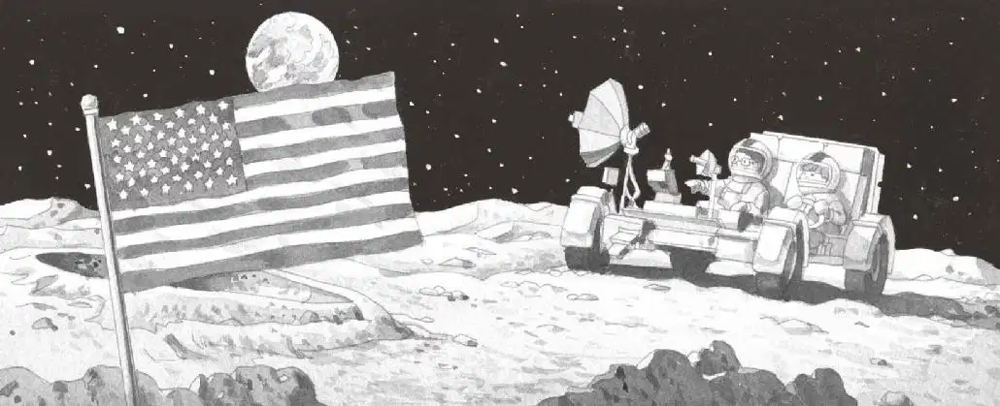
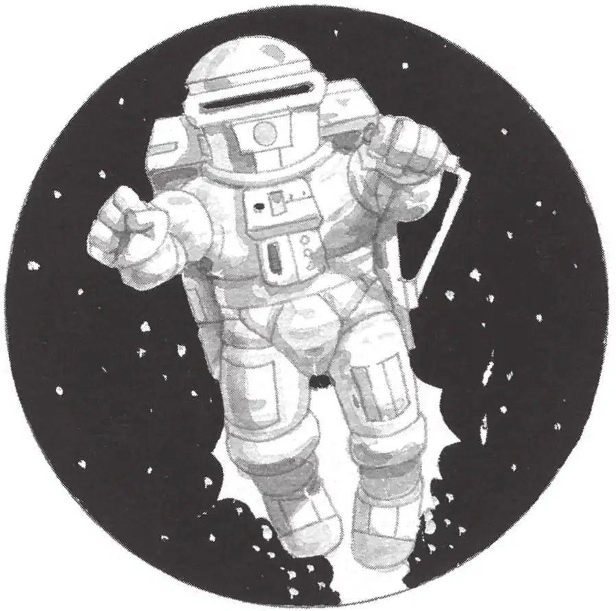

安妮开着月球探险车，在坑坑洼洼的地面剧烈颠簸，像一匹野马在奔腾。
“我要从那中间穿过去！”安妮指着两座山之间的豁口。
杰克赶紧抓住了仪表盘。
月球探险车飞速冲向那个豁口，嗖的一下穿了过去。

在豁口的另一边，地上的乱石更多了。
“快找第……第四样东西！”安妮被颠得忽上忽下。
杰克无奈极了。这样漫无目的地乱开，根本不可能找到东西。
“放……放慢速……度！”他说。
“怎么放慢？”安妮问。
“踩一下刹车试试。就在脚……脚下……慢慢地踩！”杰克说。
安妮踩住了刹车。
月球探险车的速度慢了下来。杰克松了一口气。
路面还是凹凸不平，但至少能好好地看一看月球了。
他从没见过这么荒凉的地方，没有绿色，没有蓝色，也没有红色；没有水，没有树，也没有云。
这里只有大得吓人的灰色岩石和火山口，还有一面美国国旗。
“哦，天哪，”杰克说，“这是第一批登月的宇航员留下的！”
“看，还有一架望远镜！”安妮说。
她把月球探险车开向国旗和望远镜，然后脚踩刹车，让它停了下来。
她按下那个写着“关”的按钮，和杰克一起从月球探险车里跳了出来。
他们缓缓地迈开大步，走向第一次登月的地点。
国旗旁边有个牌子，安妮大声读出上面的字：
公元1969年7月，地球上的人类第一次登上月球。我们为全人类的和平而来。
“这段话写得真好。”杰克说。
他把月球书递给安妮，然后拿出笔记本和铅笔，把牌子上的这段话抄了下来。
“我们也留下一段话吧。”安妮提议道。
“说些什么呢？”杰克问。
“还是那句话，”安妮说，“稍微改一改，说我们是第一批登上月球的小孩。”
杰克把笔记本翻到新的一页，写下他们的留言。
“现在我们得在上面签名。”安妮说。
杰克签下自己的名字。
他把笔记本和铅笔递给安妮。安妮也签了名，把笔记本又还给杰克。
杰克撕下这一页，把它放在国旗旁边。
不会有风把这张字条吹走，也不会有雨把它打湿。
它会永远留在这里，除非有人把它拿走。
想到“永远”这个词，杰克感到有点儿头晕。他晃了晃脑袋，想厘清自己的思绪。
突然，他想到了时间：“两个小时过去了吗？”
“真希望我戴了手表。”他说着站了起来，“我们的时间可能不多了。”
“哦，天哪，月球人！”安妮说道。
“什么？”杰克转身问。
安妮正往望远镜里看。
杰克走了过去。安妮让到一边，让杰克也能看见。
杰克吃惊地倒抽了一口冷气。远处，有什么东西在地面上飞。
看上去像个穿宇航服的巨人。
